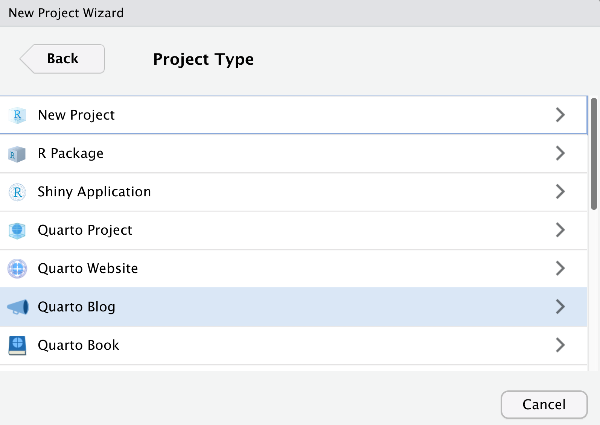

05 - Websites
Building with Quarto
Websites
- Websites are essentially
format: html+ a Quarto Project
- Website is different than
format: htmlin that it has multiple pages - Website is our first exploration into Quarto Projects
- Website/book are very similar in that they associate multiple pages/resources into a connected resource
Why not WordPress, Tumblr, Medium.com, Blogger.com, etc?1
No R Markdown support (even math support is often nonexistent or awkward)
Huge benefits of static websites compared to dynamic websites
all static files, no PHP or databases, no login/password, work everywhere (even offline)
typically fast to visit (no computation needed on the server side), and easy to speed up via CDN
Personal blog:
Limited and gated at Medium.com
https://medium.com/towards-data-science/a-gentle-guide-to-statistics-in-r-ccb91cc1177e
vs
Full control at on my own page
https://themockup.blog/posts/2018-12-10-a-gentle-guide-to-tidy-statistics-in-r/
Create a website
quarto create-project MySiteName --type websiteCreate a blog
quarto create-project MyBlogName --type website:blogRStudio > New Project > New Quarto Blog

Creating a blog
$ quarto create-project MyBlogName --type website:blog
Creating project at myblog:
- Created _quarto.yml
- Created index.qmd
- Created posts/welcome/index.qmd
- Created posts/post-with-code/index.qmd
- Created about.qmd
- Created styles.css
- Created posts/_metadata.ymlCreate a blog
- A blog is a website with specific “opinions” already made
- Includes a listing automatically from
postsdirectory - Can build custom listings in several ways
Core blog workflow
- Create a new folder under
/posts- this folder will be the “slug” URL (likethemockup.blog/2022-07-25-new-post/) - Create a new
index.qmdwithin the new folder
Our turn
- Create a new RStudio project (in a separate RStudio session) and select Quarto blog
- Give it a name
- Explore the directory
Rendering posts
- On a specific post, Render with RStudio > Render
- Build tab > Render/Preview Website
These will preview the entire website
- Render via termianl with
quarto renderon a specific post - this will just render that specific post
When you render the website, it will re-execute code in older posts. Not ideal in many situations!
Our turn
- Let’s render the
index.qmdtogether! - Now, let’s try Build > Render Website
Freeze
You can use the freeze option to denote that computational documents should never be re-rendered during a global project render, or alternatively only be re-rendered when their source file changes
execute:
freeze: true # never re-render during project renderexecute:
freeze: auto # re-render only when source changesfreeze: true is typically added to a _metadata.yml file within a specific directory, affecting all files in that directory.
In the case of a blog - the _metadata.yml is saved at the root of the posts directory. You can have it only within specific subdirectories for more complex sites.
Cache
Cache on the other hand, stores the results of computations for a specific file.
Note that cache invalidation is triggered by changes in chunk source code (or other cache attributes you’ve defined).
execute:
cache: trueI typically use cache throughout various types of outputs when I have computationally expensive chunks. Think a tidymodels workshop website that is demo’ing with grid-tuning.
Our turn
Add a
_metadata.ymlto the/posts/directoryAdd the freeze code to
_metadata.yml
execute:
freeze: trueRender
index.qmdin the project directory and note the items that are builtExplore the
_freezedirectory
- Marvel at the “beautiful” JSON - it’s not for you, it’s for the machine
Themes
https://quarto.org/docs/websites/website-blog.html#themes
default, cerulean, cosmo, cyborg, darkly, flatly, journal, litera, lumen, lux, materia, minty, morph, pulse, quartz, sandstone, simplex, sketchy, slate, solar, spacelab, superhero, united, vapor, yeti, zephyr
To change theme, modify the bottom of your website’s _quarto.yml
format:
html:
theme: cosmoThemes


Our turn
- Open
_quarto.ymland change the theme to one of the support Bootswatch themes - Create a new folder in
/posts/- title it2022-07-26-my-first-post - Create a new blank
index.qmdin that folder, add aformat: htmlYAML header - Add some text and a markdown image:
, along with maybe some code :laptop: - Render it!
Adding an About page
---yaml
twitter-card:
image: images/profile-preview.png
creator: "@thomas_mock"
open-graph: true
title: "Tom Mock"
image: images/profile-preview.png
about:
template: trestles
links:
- icon: twitter
text: Twitter
href: https://twitter.com/thomasmock
- icon: github
text: Github
href: https://github.com/jthomasmock
---About page templates
about:
template: trestles


Our turn
- Open your about page (
about.qmd) - Change some of the details, add more details and choose a specific template (jolla, trestles, solana, marquee, broadside)
- Render it!
Landing page
- The landing page for your website defaults to the blog/listings page
your-proj/index.qmdbecomes your “home page”
blogdownusers might be used to/prefer your landing page being your “about me” page- This is easy to do with renaming your
index.qmd->blog.qmdandabout.qmd->index.qmd
- Re-structuring your website also requires modifying your
_quarto.yml
website:
title: "My blog name"
site-url: "https://MyBlogSiteUrl.com"
navbar:
right:
- blog.qmd
- icon: twitter
href: "https://twitter.com/my_user_name"Listings
Listings
| Type | Description |
|---|---|
| default | A blog style list of items. |
| table | A table of listings. |
| grid | A grid of listing cards. |
Listings
By default, listings will appear in full width rows that display the item’s metadata (author and date), title, description, and image.

Grid style listings display a card for each item.

The table listing style provides a traditional tabular layout.

Our turn
- Open your existing Quarto blog from before
- Let’s change the listing type of our blog - change from default to
grid - Re-render the
index.qmd
Listing location
---
title: "Listing Example"
listing:
id: sample-listings
contents: posts
type: table
---
You can review the following documents for additional information:
::: {#sample-listings}
:::Populating listings
---
title: "Listing Example"
listing:
contents: posts
---title: "Listing Example"
listing:
- id: lab-reports
contents: "reports/*.qmd"
type: grid
- id: lab-notes
contents: "lab-notes/*reports.qmd"
type: tableSome stuff
::: {#lab-reports}
:::
Some other stuff
::: {#lab-notes}
:::Manual listings
Sometimes you might want to build out your own listing and link to arbitrary content rather than specific rendered file.qmd
---
listing:
contents:
- author: First Author
title: [First Title](a-url.com)
- author: Second Author
title: [Second Title](a-url2.com)
------
listing:
contents:
- items.yml
---- author: Tom Mock
title: <a href='quarto.org'>An intro to Quarto</a>
- Author: Katie Masiello
title: <a href='pins.rstudio.com'>Intro to pins</a>Complex Example:
Complex Example, index.qmd YAML
listing:
- id: etl
contents: "etl.yml"
type: grid
grid-columns: 2
image-height: 100px
- id: modeling
contents: "modeling.yml"
type: grid
image-height: 100px
grid-columns: 2
- id: pins
contents: "pins.yml"
type: table
field-display-names:
subtitle: "Description"
date-modified: "Last Updated"
- id: api
contents: "api.yml"
type: default
image-align: left
image-height: 75px
- id: apps
contents: "apps.yml"
type: default
image-align: left
image-height: 75px
---Publishing
| Destination | Description |
|---|---|
| GitHub Pages | Publish content based on source code managed within a GitHub repository. Use GitHub Pages when the source code for your document or site is hosted on GitHub. |
| RStudio Connect | Publishing platform for secure sharing of data products within an organization. Use RStudio Connect when you want to publish content within an organization rather than on the public internet. |
| Netlify | Professional web publishing platform. Use Netlify when you want support for custom domains, authentication, previewing branches, and other more advanced capabilities. |
| Other Services | Content rendered with Quarto uses standard formats (HTML, PDFs, MS Word, etc.) that can be published anywhere. Use this if one of the methods above don’t meet your requirements. |
Publishing
Static Only
quartoCLI:quarto publish DESTINATION DOCUMENT.QMDquartoR package:quarto::quarto_publish_???()
Code
Evaluate R/Python code and render on a schedule
RStudio Connect
rsconnect::deployDoc(quarto = "path/to/quarto")rsconnect::deployDoc(quarto = quarto::quarto_path())
Static Publish
quarto::quarto_publish_???()quarto_publish_site(server = "rstudioconnect.example.com")quarto_publish_doc(server = "rpubs.com")quarto_publish_app(server = "shinyapps.io")
quarto publish DESTINATION DOCUMENT.QMDquarto publish netlify document.qmdquarto publish gh-pages document.qmdquarto publish connect document.qmd
Netlify
- Cheat code: Netlify drop
GitHub Pages
- Name your content
index.qmdto generateindex.html-> Push to GitHub
Step 2: Name your slides index.qmd pic.twitter.com/wLXN43rUlZ
— Emil Hvitfeldt (@Emil_Hvitfeldt) July 21, 2022
Our turn
In your blog project:
quarto publish quarto-pub- Choose a username and/or authenticate with
quartopub.com - Enjoy your new blog/site!
Websites
Similar to blog, but less of a focus on listing/posts and more focus on individual pages and overall navigation.
website:
title: "Get Started with Quarto"
twitter-card:
card-style: summary_large_image
description: "rstudio::conf-2022 2 day workshop on getting started with Quarto"
image: "https://raw.githubusercontent.com/rstudio-conf-2022/get-started-quarto/main/preview.jpeg"
page-footer:
left: "This page was built with ❤️ and [Quarto](https://quarto.org/) by [Tom Mock](https://themockup.blog)."
navbar:
background: "#447099"
left:
- href: index.qmd
text: Home
- text: Day 1
menu:
- href: materials/01-intro-quarto.qmd
text: "Intro to Quarto"
- href: materials/02-authoring.qmd
text: "Authoring Quarto"
- href: materials/03-computation-editors.qmd
text: "Code and Editors"
- href: materials/04-static-documents.qmd
text: "Static Documents" Quarto Project
When you create a project, a _quarto.yml config file is created. Here is an example of what the _quarto.yml looks like:
project:
output-dir: _output
toc: true
number-sections: true
bibliography: references.bib
format: #< default format inherited by other documents
html:
css: styles.cssMore complex example
Quarto Projects
- Minimal project has at least 1x file and 1x
_quarto.yml - A project is a directory (and can have sub-directories)
A typical project is used to:
- Aggregate content (website/blog/book)
- Share metadata (YAML config) across multiple files
- Render an entire directory together or redirect output to another directory
- Freeze computation across a project or team
Books
The structure of a Quarto book can be as simple as a list of chapters, or can alternatively incorporate multiple parts and/or appendices. Quarto book chapters and sections are automatically numbered (for cross-referencing), however you can also specify that some parts of the book should remain unnumbered.
Book structure
project:
type: book
book:
title: "mybook"
author: "Jane Doe"
date: "8/18/2021"
chapters:
- index.qmd
- intro.qmd
- summary.qmd
- references.qmdbibliography: references.bib
format:
html:
theme: cosmo
pdf:
documentclass: scrreport
epub:
cover-image: cover.png